1016D24 RIGHT CYLINDER HEAD - REMOVING-REFITTING AND REPLACING GASKET
- Path
- Procedures > 10 ENGINE > 1016 CYLINDER HEAD(S) > 1016D CYLINDER HEADS - R.R. > 1016D24 RIGHT CYLINDER HEAD - REMOVING-REFITTING AND REPLACING GASKET
- Kind
- repair procedure (removal / refitting; the operation number is the code)
- Applies to
- engines: 2.0 TB, 2.4 20V, 3.0 V6, 3.2 V6; all production periods
- Interactive page
- https://sloeber94.github.io/elrnDB-lThss/en/#/184741
Applies to: engines: 2.0 TB, 2.4 20V, 3.0 V6, 3.2 V6; all production periods
 Removing
Removing
 Refitting
Refitting- Position the vehicle on a lift.
- Open the boot, remove the cover on the left hand side and disconnect the negative battery lead.
See in Op. 4450B04 Right FRONT WHEEL (one) - R.R.
- Raise the vehicle on the lift.
See in Op. 7055B54 PROTECTION/GUARD under engine - R.R.
See in Op. 7055B64 Engine compartment DUST SEAL in front wheel arch (one), left or right - R.R.
See in Op. 7055B42 FRONT WHEEL ARCH LINER (one), left or right - R.R.
See in Op. 1092G10 Engine components single drive BELT - R.R.
- Lower the lift.
See in Op. 7040D50 ENGINE COMPARTMENT UPPER SOUND INSULATION SHIELD - R.R.
See in Op. 1088B10 Engine coolant SUPPLY RESERVOIR - R.R.
See in Op. 1048A21 AIR INLET HOSE FROM INTAKE TO FILTER - R.R.
See in Op. 1048A28 vacuum air circuit resonator pipe - r+r
See in Op. 1008C10 Power unit REACTION ROD - Replace
See in Op. 1016A42 LEFT CYLINDER HEAD IGNITION COIL COVER - R.R.
See in Op. 1048A11 COMPLETE AIR FILTER -R.R.
See in Op. 1032B10 TOOTHED timing BELT - R.R. for timing adjustment or replacement
See in Op. 1072B50 Air CHAMBER - R.R.
See in Op. 5510C18 Right cylinder head IGNITION COILS - R.R.
See in Op. 1016A34 Right TAPPET COVER - R.R. and Replace gasket
- Position a container for collecting the coolant.
- Raise the vehicle
1. Open the rapid attachment band (1a) and disconnect the lower pipe (1b) from the radiator.
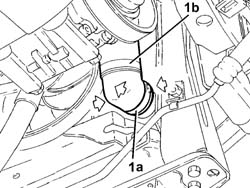
Applies to: engines: 2.0 TB, 2.4 20V, 3.0 V6, 3.2 V6; all production periods
- Lower the vehicle.
1. Disconnect the rapid connector (1a) for the fuel pipe (1b) from the tank, undo the bolt (1c) fixing the pipe retaining duct (1d), then open the duct and release the pipe.
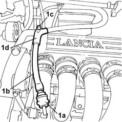
Applies to: engines: 2.0 TB, 2.4 20V, 3.0 V6, 3.2 V6; all production periods
1. Undo the two fixing bolts (1) and remove the right head fuel manifold (1b) complete with injectors.
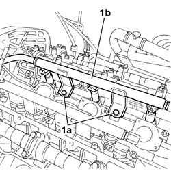
Applies to: engines: 2.0 TB, 2.4 20V, 3.0 V6, 3.2 V6; all production periods
1. Undo the six fixing bolts (1a) and remove the intake manifold (1b) complete with gasket underneath.
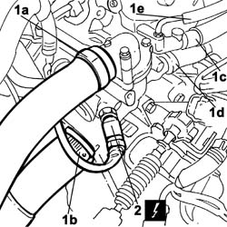
Applies to: engines: 2.0 TB, 2.4 20V, 3.0 V6, 3.2 V6; all production periods
1. Open the bands and disconnect the water supply pipe (1a) from the thermostat to the radiator, the water supply pipe (1b) to the heater, the water return pipe (1c) from the heater, the breather pipe (1d) and the fluid feeder pipe (1e) from the pump.
2. Disconnect the engine coolant temperature sensor electrical connection.
 | Description | Connector |
|---|---|---|
2 | I.E. engine temperature sensor | K045 |
Applies to: engines: 2.0 TB, 2.4 20V, 3.0 V6, 3.2 V6; all production periods
1. Undo the fixing bolts (1a) and remove the thermostat unit (1b).
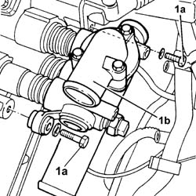
Applies to: engines: 2.0 TB, 2.4 20V, 3.0 V6, 3.2 V6; all production periods
See in Op. 1008C14 BRACKET ON ENGINE FOR REACTION ROD
See in Op. 1032C18 Timing belt MOVING TENSIONER - R.R.
- Raise the vehicle.
1. Undo the nuts (1a) fixing the flanges for the front section of the exhaust manifold (1b) to the pre-catalyzer and remove the section of pipe.
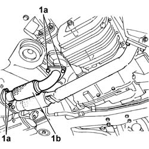
Applies to: engines: 2.0 TB, 2.4 20V, 3.0 V6, 3.2 V6; all production periods
1. Remove the front Lambda sensor (1a) from the right head exhaust manifolds (1b).
| Description | Connector |
|---|---|---|
1a | Lambda sensor on pre-catalyzer | K015 |
2. Undo the nuts fixing the right head exhaust manifolds and move the manifolds aside towards the engine compartment bulkhead.
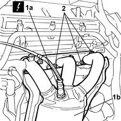
Applies to: engines: 2.0 TB, 2.4 20V, 3.0 V6, 3.2 V6; all production periods
1. Undo the bolt (1a) fixing the timing sensor (1b) and move it aside.
| Description | Connector |
|---|---|---|
1b | Timing sensor | K047 |
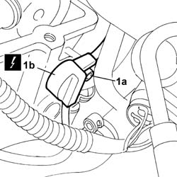
Applies to: engines: 2.0 TB, 2.4 20V, 3.0 V6, 3.2 V6; all production periods
1. Undo the bolt (1a) fixing the alternator mounting bracket (1b) to the head
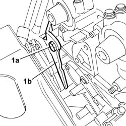
Applies to: engines: 2.0 TB, 2.4 20V, 3.0 V6, 3.2 V6; all production periods
1. Undo the nuts (1a) fixing the right head to the cylinder block/crankcase then, with the help of a second mechanic, remove the head (1b) and the gasket underneath.
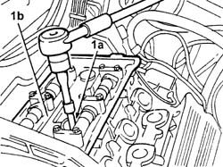
Applies to: engines: 2.0 TB, 2.4 20V, 3.0 V6, 3.2 V6; all production periods
1. Position the liner/bore locks (1a) fastening them to the studs (1b).
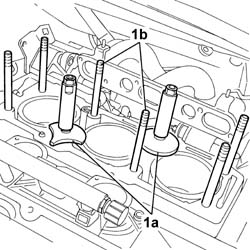
Applies to: engines: 2.0 TB, 2.4 20V, 3.0 V6, 3.2 V6; all production periods
Refitting
Removing- Remove the liner/bore locks.
- Position the cylinder head gasket on the cylinder block/crankcase.
- Position the cylinder head on the studs.
1. Tighten the nuts (1a) fixing the cylinder head to the recommended torque, in stages, using the angular tightening tool (1b).
 | Value - daNm | Fastening | Component | Ø |
|---|---|---|---|---|
1a | 2,5 + 230° | Nut | CYLINDER HEAD FASTENERS | M12 |
 | Description | Code | Function |
|---|---|---|---|
1b | Torque wrench | 1.860.942.000 | Cylinder head nuts angular tightening. |
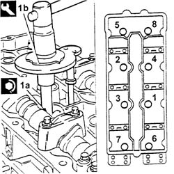
Applies to: engines: 2.0 TB, 2.4 20V, 3.0 V6, 3.2 V6; all production periods
- Position the timing sensor on the right head and tighten the fixing bolt.
- Raise the vehicle
- Tighten the bolt fixing the alternator mounting bracket.
| Value - daNm | Fastening | Component | Ø |
|---|---|---|---|---|
. | 0.6 | Bolt | ALTERNATOR BRACKETS | M6 |
- Working in the lower part of the vehicle, position the preconverter complete with heat shield bulkhead and gaskets between the head and manifolds.
- Lower the vehicle
- Tighten the nuts fixing the exhaust manifolds to the recommended torque.
| Value - daNm | Fastening | Component | Ø |
|---|---|---|---|---|
. | 2.8 | Nut | CATALYTIC PRE-CONVERTER | M8 |
- Position the Lambda sensor and tighten it to the recommended torque.
| Description | Connector |
|---|---|---|
Lambda sensor on pre-catalyzer | K015 |
| Value - daNm | Fastening | Component | Ø |
|---|---|---|---|---|
. | 5.8 | Connector | LAMBDA PROBE (ONE) | M18 X 1.5 |
- Raise the vehicle
- Position the pipe between the right pre-converter and the converter complete with gaskets, then tighten the nuts fixing the pipe flanges to the recommended torque.
| Value - daNm | Fastening | Component | Ø |
|---|---|---|---|---|
. | 2.8 | Nut | EXHAUST PIPE MOUNTS/FASTENERS | M8 |
- Lower the vehicle
See in Op. 1008C14 BRACKET ON ENGINE FOR REACTION ROD
See in Op. 1032C18 Timing belt MOVING TENSIONER - R.R.
- Fit the thermostat unit and secure it tightening the bolts to the recommended torque.
| Value - daNm | Fastening | Component | Ø |
|---|---|---|---|---|
. | 0.9 | Bolt | THERMOSTAT MOUNT | M6 |
- Connect the engine coolant temperature sensor electrical connection.
| Description | Connector |
|---|---|---|
I.E. engine temperature sensor | K045 |
- Connect the water supply pipe from the thermostat to the radiator, the water supply pipe to the heater, the water return pipe from the heater, the breather pipe and the fluid feeder pipe from the pump and close the bands.
- Position the intake manifold and tighten the fixing bolts to the recommended torque.
- Using the tool consisting of the USAG 279 MG bush and extension USAG 236 3/8 125 or an equivalent tool, undo and remove the spark plug for the right head timing side cylinder.
1. Fit the tool (1a), complete with dial gauge (1b), in the housing for the spark plug removed previously.
| Description | Code | Function |
|---|---|---|---|
1a | Extension | 1.870.896.500 | Engine tuning |
- Rotate the crankshaft through small rotations (in both directions) until the piston for the right head timing side cylinder no. 1 is at T.D.C. in the explosion stroke.
2. Remove the camshaft caps marked with the letters "B" and "G" for the right head and, in their place, fit the templates (2a) and (2b) with the writing "1860082001 / DX A 1 CIL" and "1.870.896.600 /DX S 1 CIL".
| Description | Code | Function |
|---|---|---|---|
2a | Templates | 1.860.820.000 | Engine tuning |
| Description | Code | Function |
|---|---|---|---|
2b | Templates | 1.860.820.000 | Engine tuning |
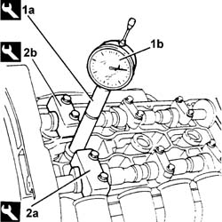
Applies to: engines: 2.0 TB, 2.4 20V, 3.0 V6, 3.2 V6; all production periods
1. Remove the camshaft caps marked with the numbers "7" and "4" for the left cylinder head and, in their place, fit the templates (1a) and (1b) with the writing "1870896600 /SX S 4CIL" and "1860820002 /SX A 6CIL".
| Description | Code | Function |
|---|---|---|---|
1a | Templates | 1.860.820.000 | Engine tuning |
| Description | Code | Function |
|---|---|---|---|
1b | Templates | 1.860.820.000 | Engine tuning |
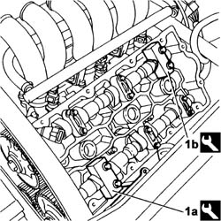
Applies to: engines: 2.0 TB, 2.4 20V, 3.0 V6, 3.2 V6; all production periods
- Loosen the bolts for the camshaft drive pullies using the special tool for counter-torque.
| Description | Code | Function |
|---|---|---|---|
. | Counter-torque | 1.870.896.300 | Lock the rotation of the driven toothed pulley |
- Fit the timing drive belt starting from the drive pulley and continuing in an anti-clockwise direction making sure that the drive branches are properly taut.
1. Fit the tool (1a) and secure it using bolt (1b) for the alternator and bolt (1c) for the water pump.
| Description | Code | Function |
|---|---|---|---|
1a | Belt tensioner | 1.860.950.000 | Timing belt tensioning |
2. Act on the belt tensioner tool nut (2a) until the moving reference on the belt tensioner (2b) is under the fixed reference.
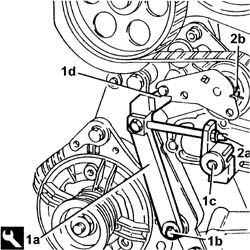
Applies to: engines: 2.0 TB, 2.4 20V, 3.0 V6, 3.2 V6; all production periods
1. Tighten the bolts (1a) for the camshaft drive pullies to the recommended torque using tools (1b) and (1c).
| Value - daNm | Fastening | Component | Ø |
|---|---|---|---|---|
1a | 6.8 - 8.4 | Bolt | TIMING DRIVEN PULLIES | M10 |
| Description | Code | Function |
|---|---|---|---|
. | Counter-torque | 1.870.896.300 | Lock the rotation of the driven toothed pulley |
| Description | Code | Function |
|---|---|---|---|
1c | Extension for torque wrench | 1.870.896.400 | Tightening camshaft drive pulley bolts |
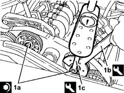
Applies to: engines: 2.0 TB, 2.4 20V, 3.0 V6, 3.2 V6; all production periods
- Remove the timing templates.
| Description | Code | Function |
|---|---|---|---|
Templates | 1.860.820.000 | Engine tuning |
- Fit the camshaft caps removed in place of the templates removed and secure them by tightening the bolts to the recommended torque.
| Value - daNm | Fastening | Component | Ø |
|---|---|---|---|---|
. | (Cylinder head side) 1.8 -2.0 | Bolt | CAMSHAFT CAPS | M8 |
- Rotate the crankshaft through two revolutions in its direction of rotation to allow the timing belt to bed in.
1. Check that the moving reference for the timing belt tensioner coincides with the fixed reference.
2. If the references are not aligned, gently release the tensioner tension acting on the nut for the tensioning tool until the reference coincide.
3. Tighten the bolts for the timing belt tensioner to the recommended torque.
| Value - daNm | Fastening | Component | Ø |
|---|---|---|---|---|
3 | (Cylinder head side) 1.7 -2.1 | Bolt | MOBILE TIMING TENSIONER | M8 |
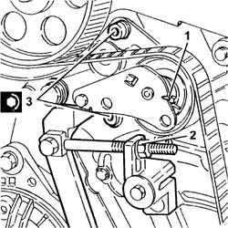
Applies to: engines: 2.0 TB, 2.4 20V, 3.0 V6, 3.2 V6; all production periods
- Remove the belt tensioner tool.
| Description | Code | Function |
|---|---|---|---|
. | Belt tensioner | 1.860.950.000 | Timing belt tensioning |
- Remove the dial gauge and the extension from the housing for the spark plug for the right head timing side cylinder no. 1.
| Description | Code | Function |
|---|---|---|---|
Extension | 1.870.896.500 | Engine tuning |
- Fit the spark plug for the right head timing side cylinder no. 1 tightening it to the recommended torque using the tool consisting of the USAGE 279 MG bush and the USAG 236 3/8 125 extension or an equivalent tool.
| Value - daNm | Fastening | Component | Ø |
|---|---|---|---|---|
. | 2.7 | Spark plug | SPARK PLUGS | M14 X 1.25 |
See in Op. 1016A34 Right TAPPET COVER - R.R. and Replace gasket
See in Op. 5510C18 Right cylinder head IGNITION COILS - R.R.
See in Op. 1072B50 Air CHAMBER - R.R.
See in Op. 1032B10 TOOTHED timing BELT - R.R. for timing adjustment or replacement
See in Op. 1048A11 COMPLETE AIR FILTER -R.R.
See in Op. 1016A42 LEFT CYLINDER HEAD IGNITION COIL COVER - R.R.
See in Op. 1008C10 Power unit REACTION ROD - Replace
See in Op. 1048A28 vacuum air circuit resonator pipe - r+r
See in Op. 1048A21 AIR INLET HOSE FROM INTAKE TO FILTER - R.R.
See in Op. 1088B10 Engine coolant SUPPLY RESERVOIR - R.R.
See in Op. 7040D50 ENGINE COMPARTMENT UPPER SOUND INSULATION SHIELD - R.R.
- Raise the lift.
See in Op. 1092G10 Engine components single drive BELT - R.R.
See in Op. 7055B42 FRONT WHEEL ARCH LINER (one), left or right - R.R.
See in Op. 7055B64 Engine compartment DUST SEAL in front wheel arch (one), left or right - R.R.
See in Op. 7055B54 PROTECTION/GUARD under engine - R.R.
See in Op. 4450B04 Right FRONT WHEEL (one) - R.R.
- Connect the negative battery lead, then close the boot.
- Remove the vehicle from the lift.
- [0010T21]
Topics linked from this page (18)
- 1008C10 Power unit REACTION ROD - Replace
- 1008C14 BRACKET ON ENGINE FOR REACTION ROD
- 1016A34 Right TAPPET COVER - R.R. and Replace gasket
- 1016A42 LEFT CYLINDER HEAD IGNITION COIL COVER - R.R.
- 1032B10 TOOTHED timing BELT - R.R. for timing adjustment or replacement
- 1032C18 Timing belt MOVING TENSIONER - R.R.
- 1048A11 COMPLETE AIR FILTER -R.R.
- 1048A21 AIR INLET HOSE FROM INTAKE TO FILTER - R.R.
- 1048A28 vacuum air circuit resonator pipe - r+r
- 1072B50 Air CHAMBER - R.R.
- 1088B10 Engine coolant SUPPLY RESERVOIR - R.R.
- 1092G10 Engine components single drive BELT - R.R.
- 4450B04 Right FRONT WHEEL (one) - R.R.
- 5510C18 Right cylinder head IGNITION COILS - R.R.
- 7040D50 ENGINE COMPARTMENT UPPER SOUND INSULATION SHIELD - R.R.
- 7055B42 FRONT WHEEL ARCH LINER (one), left or right - R.R.
- 7055B54 PROTECTION/GUARD under engine - R.R.
- 7055B64 Engine compartment DUST SEAL in front wheel arch (one), left or right - R.R.